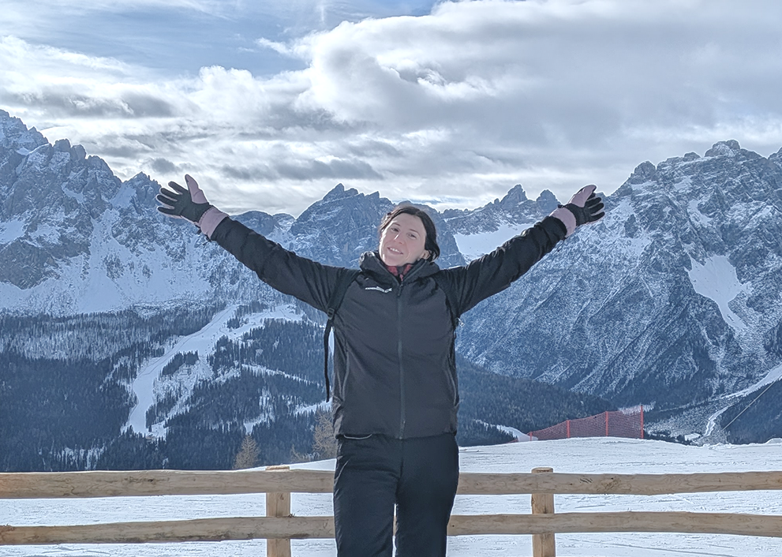

My name is Vanessa and I am a Product designer based in Udine, Italy. I provide accessible, user-centered and scalable digital experiences. My services include UX research, wireframing, design systems creation, prototyping, usability testing, user interface design, accessibility testing, composing mockups, and HTML and CSS development.
I work at SMC company since January 2024 as a UX and UI designer, producing websites for corporate, public administration (PA), B2B, banking and insurance sectors, where accessibility, and compliance are essential. My work focuses on translating complex requirements into intuitive interfaces that balance business goals and user needs.
My core skills include:
- User research (interviews, surveys, usability testing)
- Information architecture & user flows
- Wireframing and high-fidelity prototyping
- Design systems & component libraries
- Visual design and UI patterns
- Accessibility (audit, according to EU Directive 2016/2102)
- Responsive design
- Design thinking and problem solving
My career goal is to apply and expand the knowledge I acquired in interactive media, UX and UI design, multimedia and video editing, 3D modelling, graphic and sound design. I aim to contribute to multidisciplinary teams where strategy, creativity and technology intersect to create meaningful digital products.
During my bachelor’s and master’s degree studies, I learned how to code, which allows me to collaborate effectively with developers and understand technical constraints from the early design stages. In my spare time, I find it fulfilling to film and edit videos, and I usually rely on open-source softwares for post-production (DaVinci Resolve). In the past I also explored music production: playing lots of musical instruments, I am able to record them and mix the audio on Ableton or Audacity, applying my technical background to the creative process of sound design.
Curious and open-minded, I am always eager to learn and I enjoy discovering new approaches to transform ideas into real, tangible experiences. I find great value in drawing, whether on paper or digitally: for me, it is both a relaxing practice and a powerful creative way to explore ideas in ways that words sometimes cannot capture. Recently, I am practicing with photographic composition using film cameras, and in my spare time I like to unwind by watching a good movie and crocheting. Thanks for reading and have a good day, Vanessa!